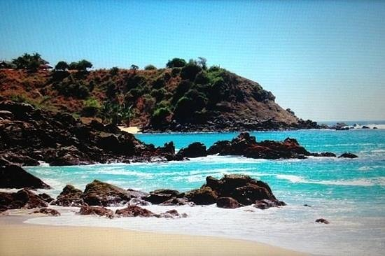

| Playa Coral
Playa Coral, de aguas cristalinas, es una de las playas tranquilas en Puerto Escondido, en Oaxaca, México. Coral es una playa poco concurrida, donde podrás disfrutar
de la tranquilidad y fotografiar sus hermosos paisajes. Esta playa se caracteriza por tener muchas rocas y una corriente a mar abierto, lo que la hace un lugar predilecto para los nadadores con experiencia. Además, puedes caminar por la arena, tomar el sol, conocer los balnearios naturales y disfrutar de las vacaciones 2020.
|

|